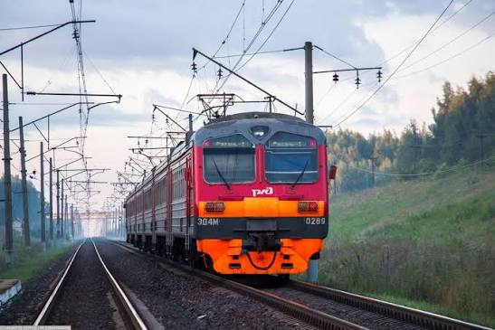

Пригородный электропоезд — Демиховский машиностроительный завод
ЭД4М — российский пригородный электропоезд постоянного тока напряжением 3 кВ, самый массовый вариант серии ЭД4 («электропоезд демиховский, 4-й тип»), выпускавшейся с 1996 по 2016 год на Демиховском машиностроительном заводе (ДМЗ). ЭД4 создавался для замены старевших ЭР2 и получил отечественное электрооборудование вместо рижского; модификация ЭД4М отличается изменённой кабиной машиниста и стала основной — из 501 поезда серии целых 448 были именно ЭД4М. Составы формируются из 4—12 вагонов, конструкционная скорость — 130 км/ч, а максимальная служебная — 120 км/ч; 10-вагонный поезд вмещает около 1088 сидящих пассажиров. Последний поезд серии — ЭД4М-0496 — был выпущен в мае 2016 года, после чего завод перешёл на новую серию ЭП2Д. ЭД4М работает в России (в том числе у ЦППК) и на Украине.